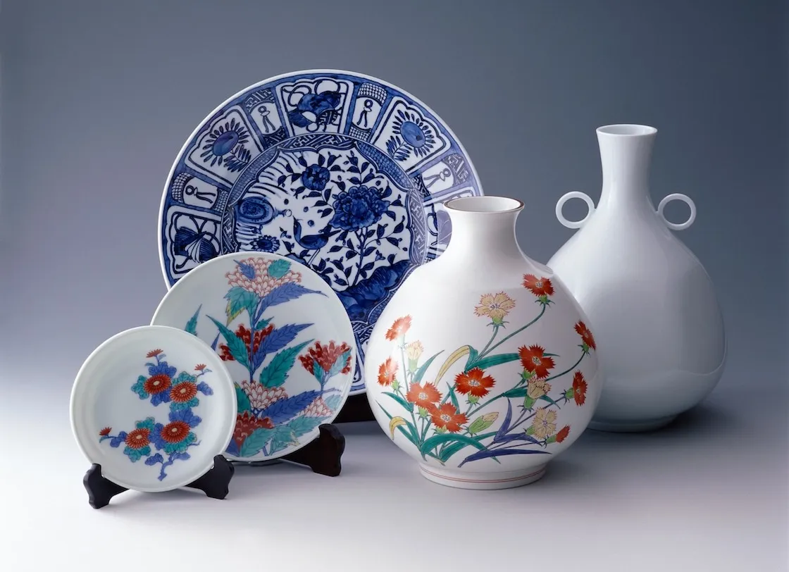

気になる窯元を訪ねる
個性豊かな窯元やショップを、自分だけのルートでめぐろう。
A WALK THROUGH ARITA
窯元の煙突、路地の景色、手になじむ一枚。
地図を片手に、器との出会いを探す小さな旅へ。
自分のペースで楽しむ、有田のまち歩き。

THE ARITA EXPERIENCE
400年の歴史が息づく有田。窯元を訪ねながら、
この町ならではの景色とものづくりにふれてみませんか。
個性豊かな窯元やショップを、自分だけのルートでめぐろう。
器が生まれる場所で、ものづくりの背景やこだわりを発見。
旅の記憶と一緒に、毎日の食卓を彩る器を見つけよう。
POTTERY & PEOPLE
それぞれの場所に、それぞれのものづくり。
まずは気になる窯元から訪ねてみよう。
※営業日・見学方法は、訪問前に各窯元へご確認ください。
NOTES FROM TRAVELERS
GOOD TO KNOW
安心して窯元めぐりを楽しむために。
YOUR ARITA JOURNEY
心に残る一枚を探しに、窯元めぐりをはじめよう。
窯元を見てみる